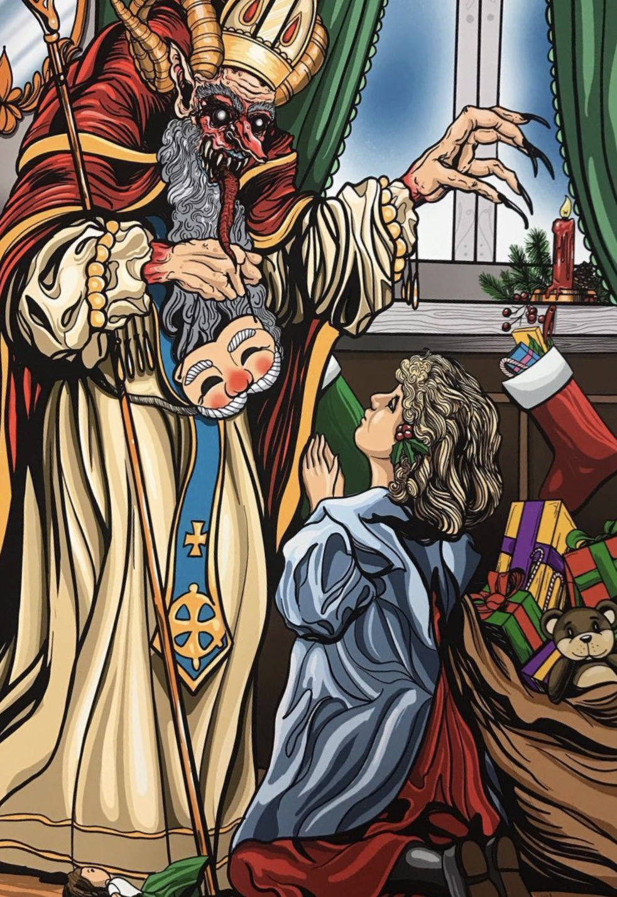
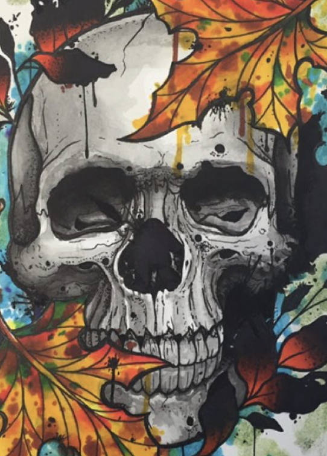
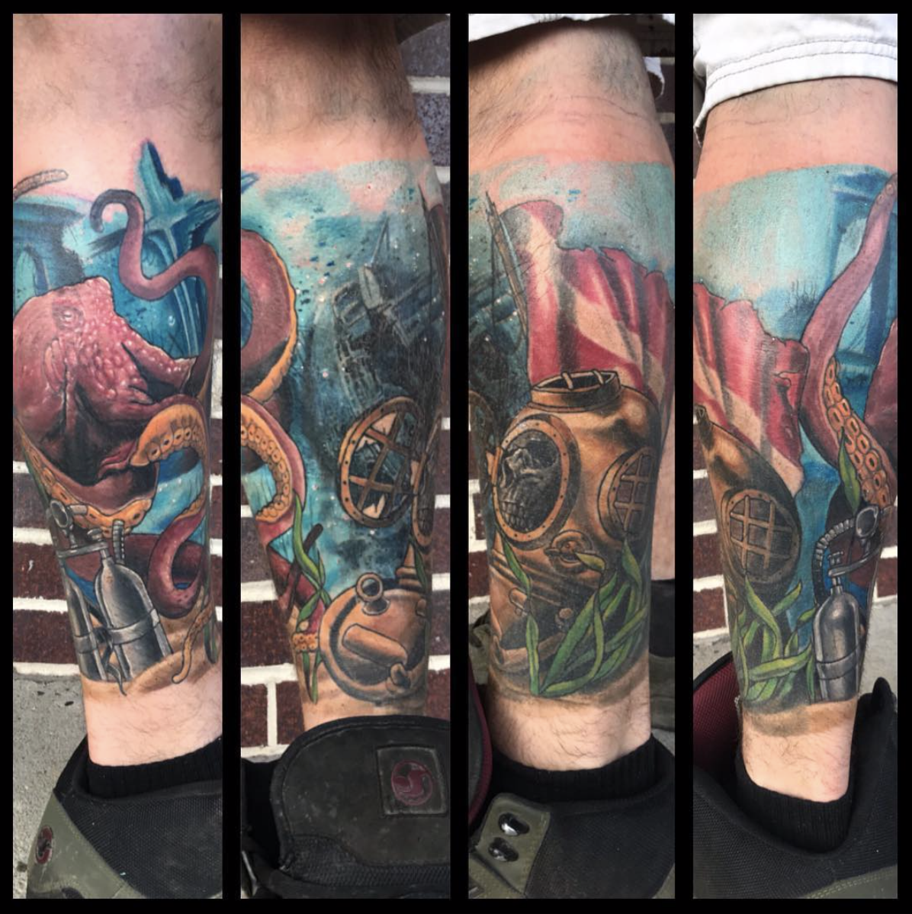
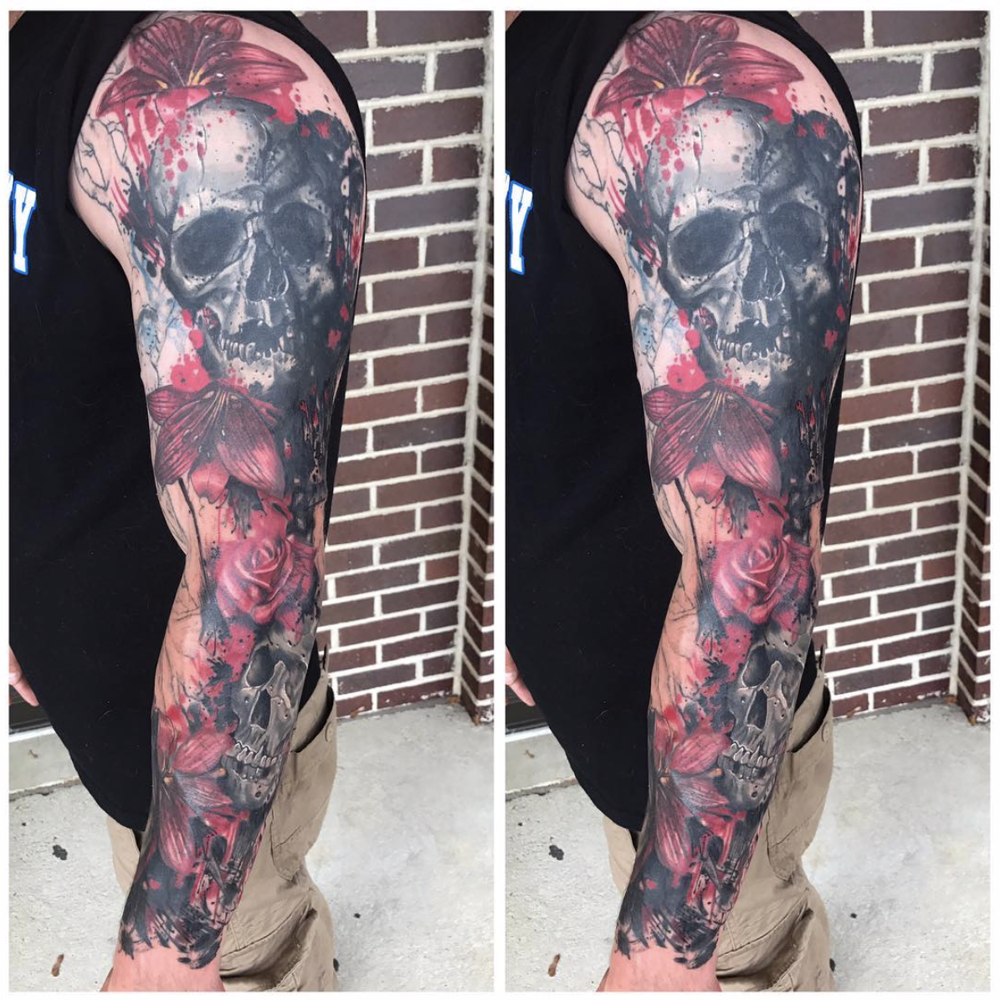
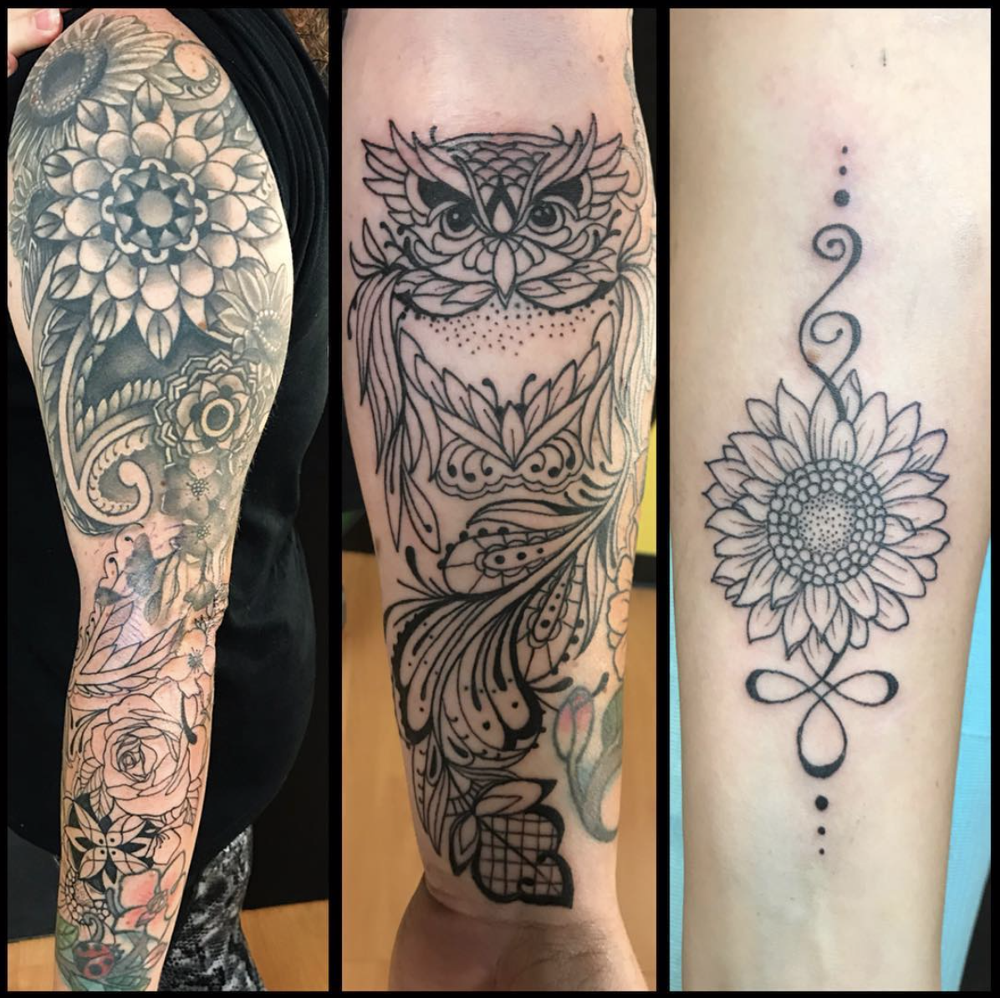
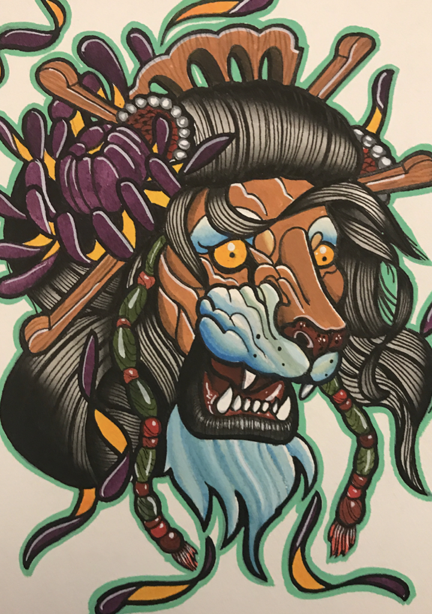

Keith Marcelle, Fine Visual and Tattoo artist located in southeastern Pennsylvania.
Tattoo
Instagram
Facebook
June 14, 2019
keith_marcelle
July 9th will be my first day at @bonedaddystattoo in Aston, Pennsylvania i am currently reopening the schedule so lets get em in! You can email me at tattoosbykeith@comcast.net Big thanks to everyone that has been patient during my transition as iam not only relocating my career but my home as well. Another thank you goes out to @jaycunliffe @broken.hands @johnpohl @natecooktattoo @plainoldcraig for having me aboard. 4932 Pennell Rd Aston pennsylvania @bonedaddystattoo #bonedaddystatto #bonedaddys #astonpennsylvania #delco
June 13, 2019
keith_marcelle
Hey everyone! Just wanted everyone to know that my last day at Paradox will be July 6th. My family is relocating back to delco! For those that have unfinished work and want to get in before i leave, i have some limited time open this month so dm me or email! The last 10 years has been an amazing ride! I wanna take a minute to thank everyone that has gotten tattooed and kept my schedule full for so long! I appreciate you all and and cherish the friendships we have. Lastly, id like to thank Sean @paradoxtattoo and Bill @billyhaines for giving me the opportunity to work alongside 2 amazing talents. Thanks for the constant push to improve not only my work, but me as a person. Im happy to have grown so much with your influences. I wish you guys many more successful years Paradox Tattoo. Thanks again! #thanks #downingtown





